Residências
Seleccione uma casa para ver os equipamentos por piso e as ocorrências. Sem registos não significa sem alarme real.
Planta geral actualizada · numeração em uso
Numeração e posições da planta Layout_atualizada_nova.pdf. 123 casas, representadas por 125 códigos originais: A01–A71, B01–B12, C01–C18, D01–D14 e E01–E10. A48/A49 constitui uma única casa e A62/A63 constitui outra, conforme confirmação do utilizador. Cada par tem uma única ficha e um marcador. As cores originais não identificam os sistemas. Botões vermelhos indicam apenas ocorrências registadas nesta demonstração.
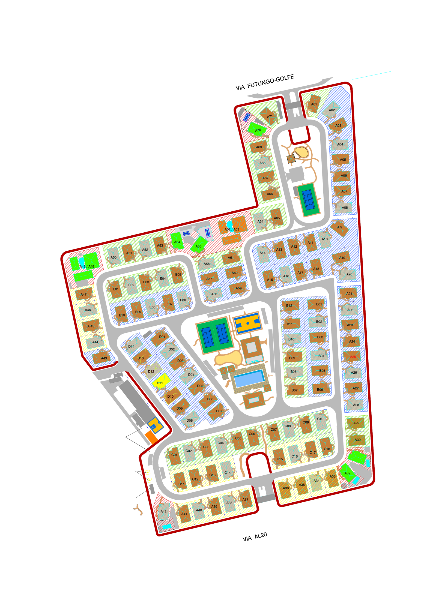
Todas as áreas
Esquema de localização por divisão, sem escala. Não representa posições exactas no tecto ou nas paredes. As referências da planta SADI T3 aparecem por verificar até à conferência em campo. Intrusão: cadastrar apenas os sensores efectivamente identificados.
Cadastro de equipamentos
Modelo residencial baseado exclusivamente na planta SADI T3: 15 referências por casa, incluindo detectores, pânico, avisadores, módulos e fonte; instalação por verificar. Os dispositivos de intrusão e áreas comuns têm quantidades por levantar.
As fichas criadas pelo modelo ficam por verificar. Os códigos administrativos não são endereços electrónicos da central.
| Código / equipamento | Local | Referência / endereço | Estado do cadastro |
|---|
Lista de verificação por área
O técnico realiza os ensaios; a equipa acompanha e regista resultados. A lista preenchida não constitui certificação.
Do levantamento à entrega
Guia das plantas da administração
Guia para acompanhar o trabalho no condomínio. Os menus e ligações exactos dependem do modelo técnico confirmado.
Descarregar o guia completo (.md)Vídeos e documentos Siemens
Vídeo: operação do FC922 · Outro modelo; não aplicar os menus à central fotografada.
Série: Cerberus PRO Modular UL · Outra variante; formação geral.
Serviço local de integração
Não ligado. Alarmes reais indisponíveis; conectores Siemens bloqueados.
Este serviço conserva eventos de simulação numa base local. Não envia comandos à central. Os registos manuais existentes permanecem separados.
Diagnóstico dos conectores
Sem consulta ao serviço.
Leituras reais
Simulações separadas
Centrais e loops da instalação
4 centrais · 22 loops. Estrutura documental de 2015 restaurada, com as listas originais de residências por circuito. A planta geral mantém a numeração actual; a correspondência entre os códigos antigos e actuais permanece por confirmar. Não estão representadas ligações de rede entre as centrais.
Descarregar a distribuição documental completaLevantamento de campo · Guarita de Serviço / SADI 4 · 08/10/2026
Rede da central · IP confirmado no painel
08/10/2026: IP Ethernet 192.168.2.63; máscara 255.255.255.0; gateway não apresentado nesta fotografia. Consulta de rede sem resposta ICMP, com indicação Destination Host Unreachable devolvida pelo router 192.168.1.1. Este ensaio não diagnostica a central nem estabelece monitoramento em tempo real.
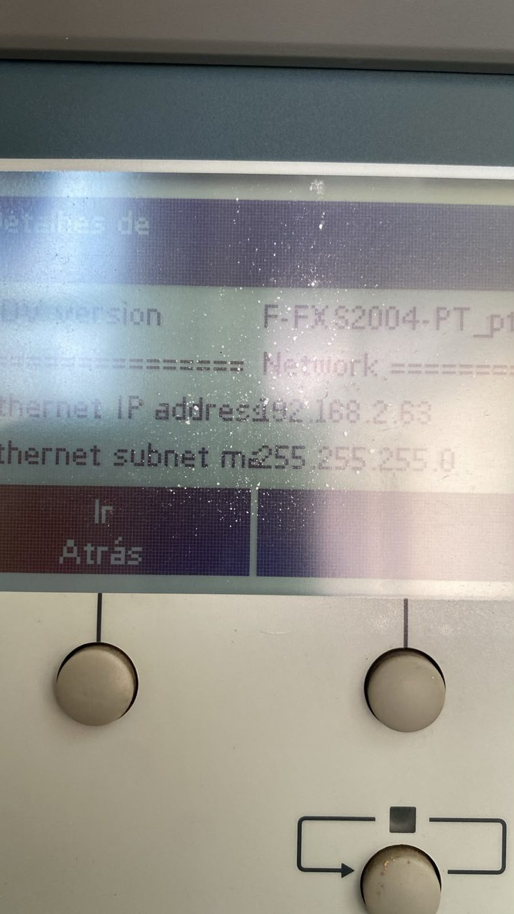
Local confirmado pelo utilizador. A etiqueta patrimonial «Equipamento Nº3» é conservada como referência do activo; não altera a identificação documental SADI 4.
| Elemento observado | Referência visível |
|---|---|
| Central Siemens | FC726 · placa técnica; FS726 aparece numa etiqueta frontal |
| Fonte | SV 24V-150W · V24230-Z6-A5 |
| Unidade identificada na etiqueta lateral | FCM7204-Z3 · A5Q00037625 02 |
| Referência da placa | FCM2027 · A5Q00031466-04 |
| Conectores / posições marcadas | X5, PER.-BUS, Network Module Pos.1 / Pos.2 (Degrade), SER OPT1 / OPT2, MASTER-LCD / SLAVE-LCD |
As fotografias documentam a cablagem existente; não confirmam o destino de cada cabo, os endereços dos dispositivos, o protocolo ou a interface de supervisão instalada. A presença de uma porta não confirma uma integração compatível.
AVARIA e ISOLADOS aparecem iluminados nas fotografias. É um registo do momento do levantamento, sem diagnóstico confirmado e sem leitura em tempo real.
Descarregar o relatório do levantamentoFotografias do levantamento (11)
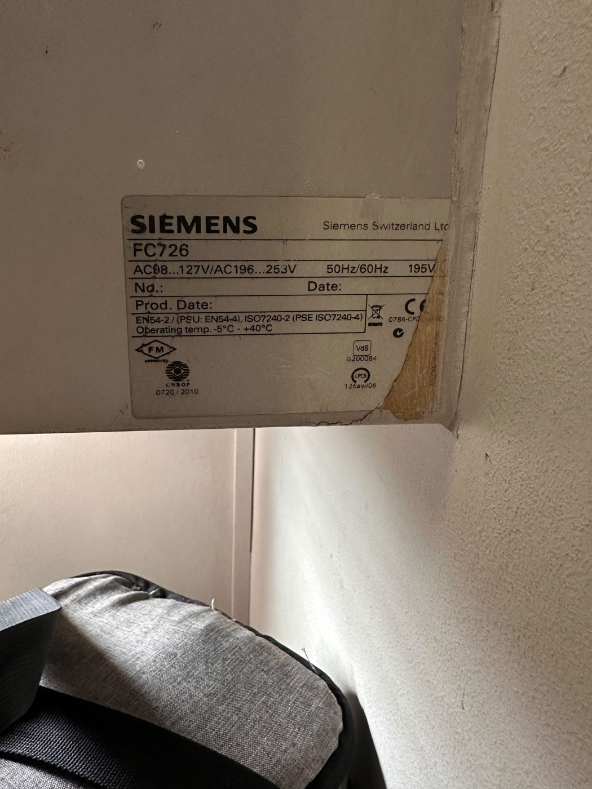
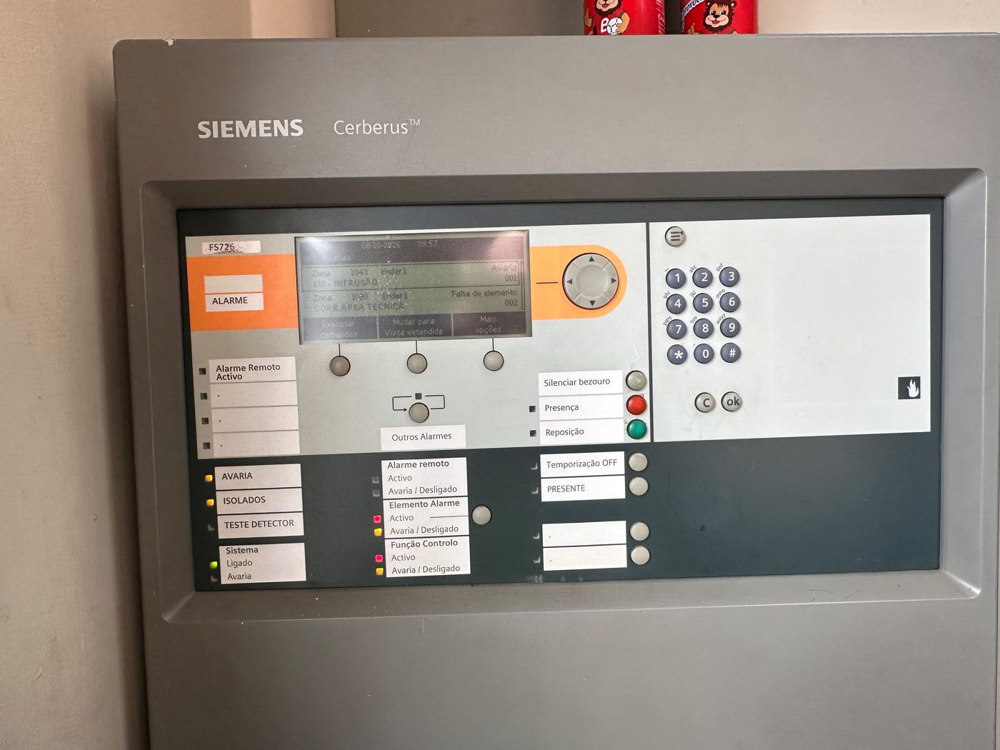
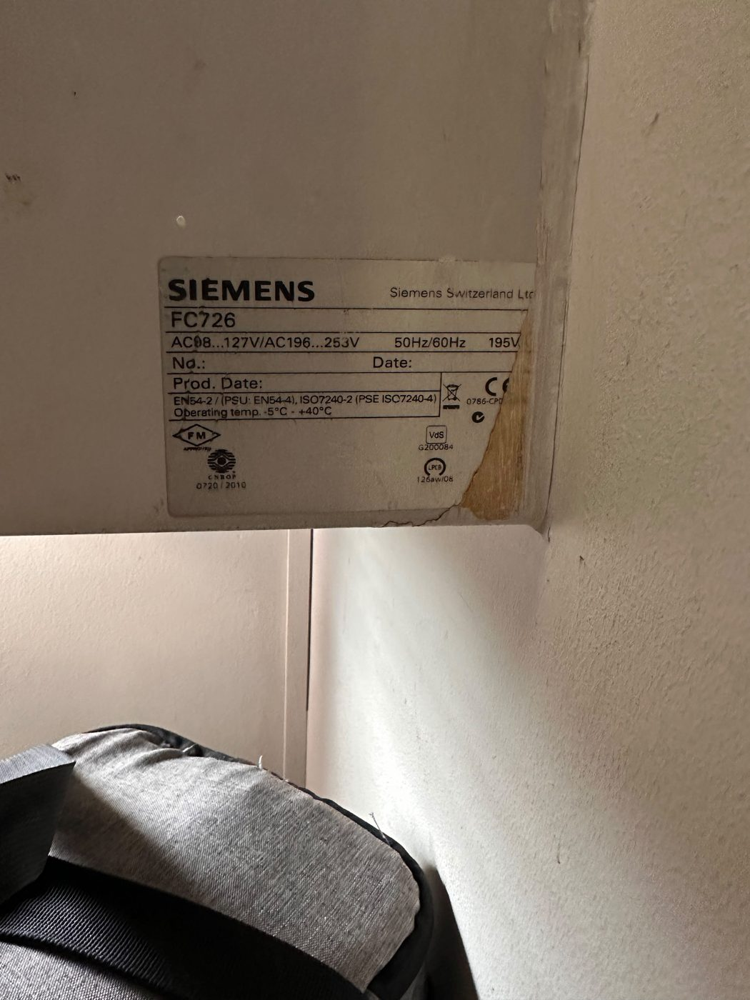
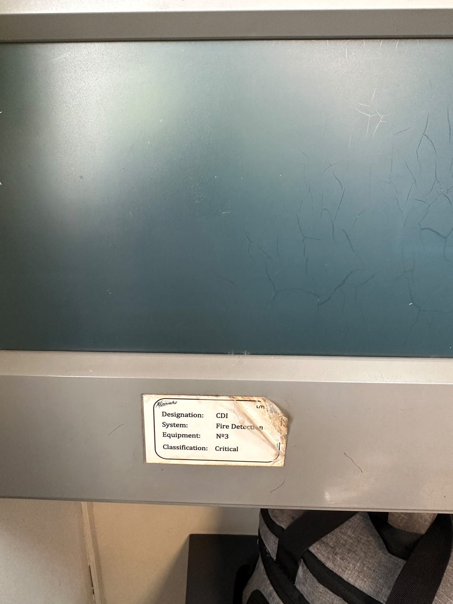
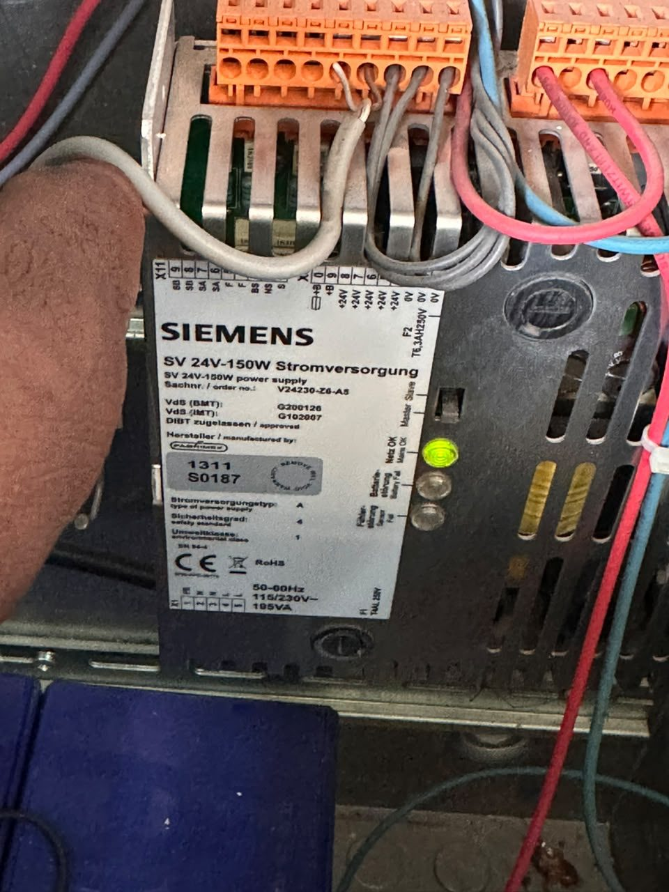
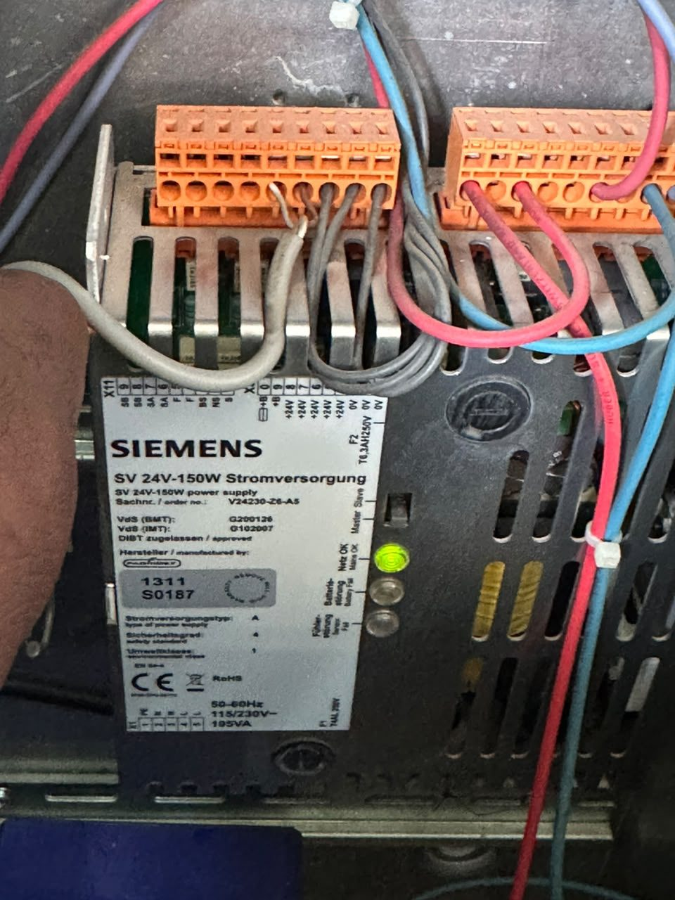
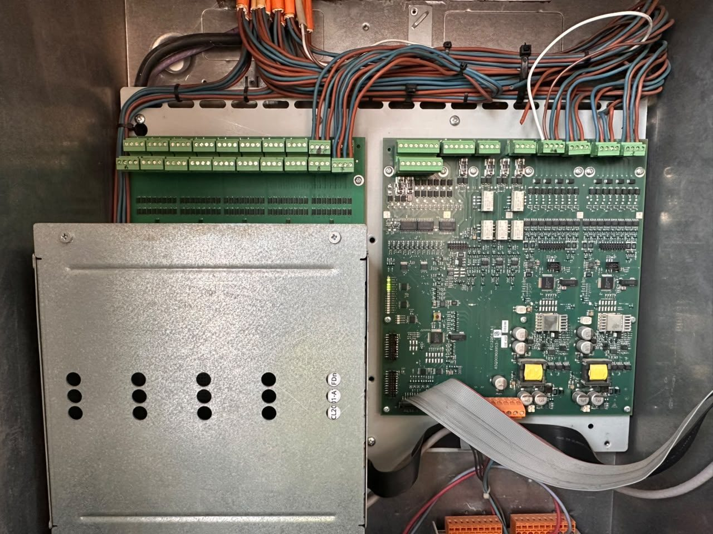
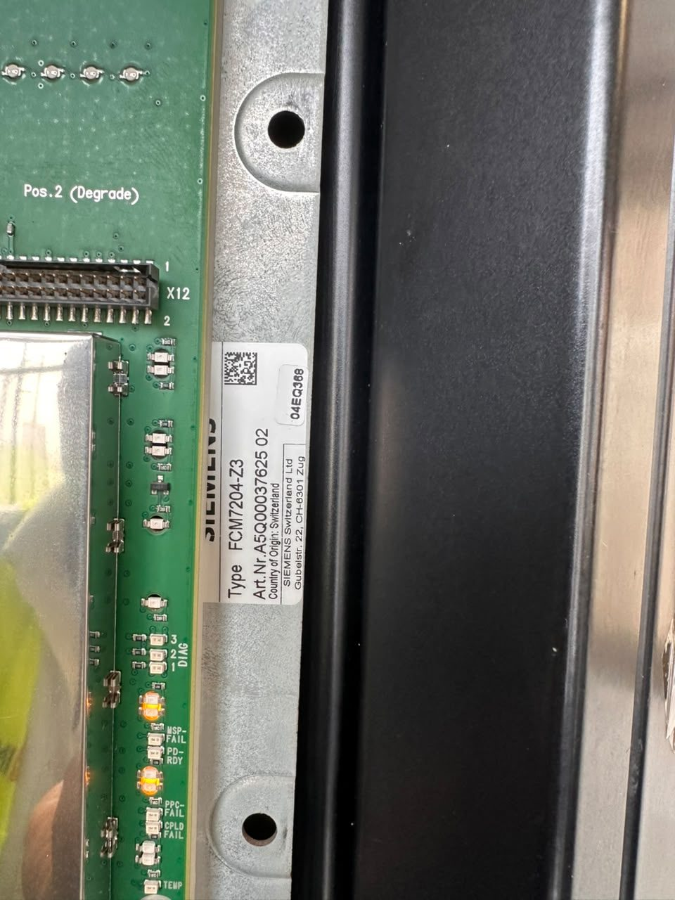
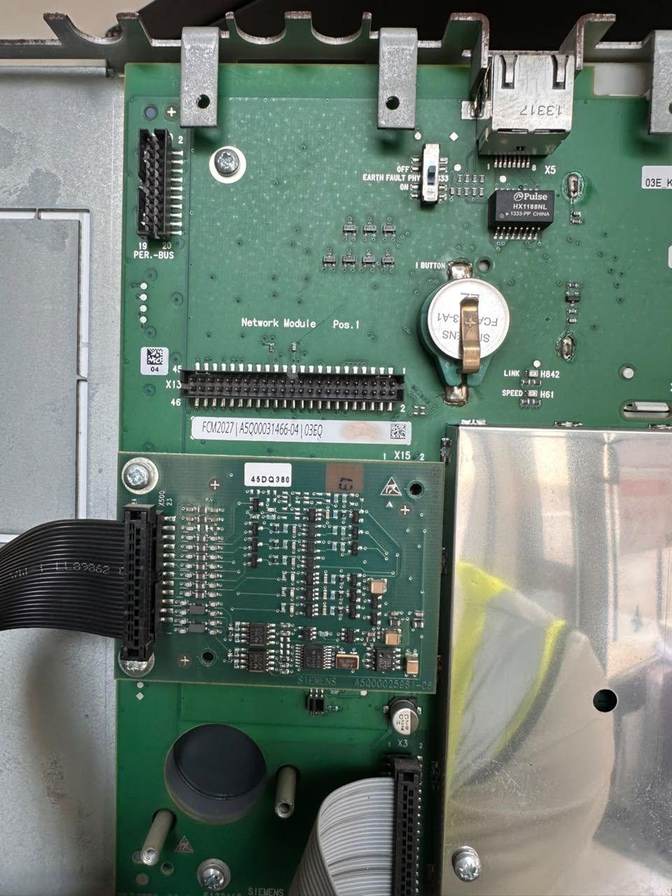
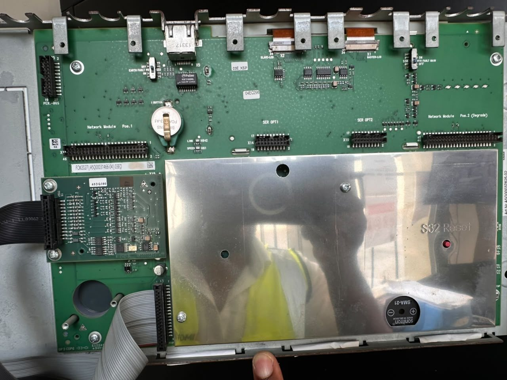
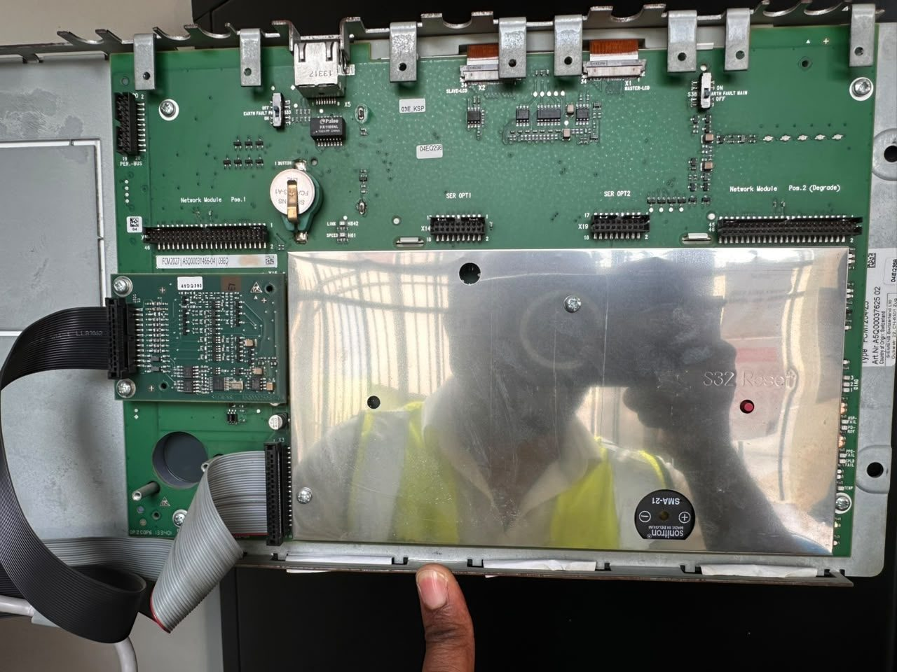
Vídeo fornecido do interior da central
Vídeo anexado como evidência; referências técnicas transcritas das fotografias.
Ficha Siemens da família FC726 · conferir variante, versão e compatibilidade da instalação com o integrador.
Documento original dos percursos · SEG_113 (referência histórica)
Documento original de 31/08/2015: os códigos impressos são históricos e não representam as descrições actuais das casas. Mostra percursos e referências à SADI de destino; não representa o estado actual medido. A identificação de cada circuito combina central e loop.
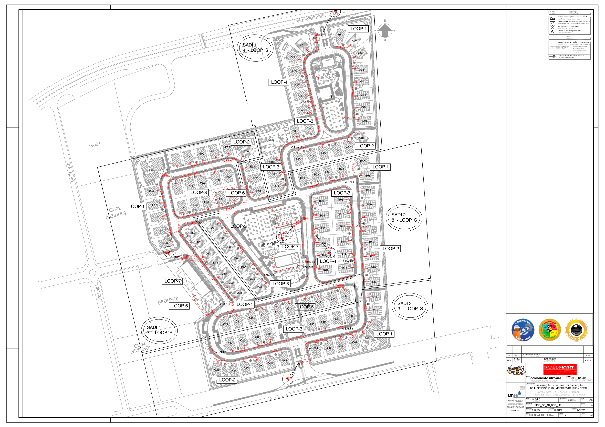
Legenda: AL é módulo de amplificação do loop. O desenho não fornece endereços individuais nem uma interface de comunicação para o software.
Monitoramento e controlo em tempo real
A interface está preparada como demonstração do fluxo de atendimento. A ligação ao equipamento real ainda não foi implementada: o modelo Siemens FC726 está confirmado nas quatro centrais; faltam validar firmware, módulos de comunicação, interface, protocolo, licenças e configuração da instalação.
Subsistemas de incêndio, intrusão, pânico e inundação (interfaces por confirmar)
↓ interface suportada, com identificação por ponto
Serviço de integração na rede local + base de dados + auditoria
↓ eventos e confirmação de comandos
Aplicação do posto de segurança, com contas e permissõesUma saída de relé com “alarme geral” não identifica cada casa ou divisão. O software precisa do mapeamento dos pontos da central.
Significado dos comandos
| Acção | Efeito |
|---|---|
| Reconhecer | Regista recepção do evento; não elimina a causa. |
| Silenciar besouro / sirenes | São comandos distintos, sujeitos às permissões e ao plano de emergência. |
| Repor | Solicita retorno após causa resolvida; exige confirmação da central. |
| Isolar ponto | Retira temporariamente protecção. Exige ponto exacto, responsável, prazo e medidas compensatórias. |
| Corrigir avaria | Reparar a causa, testar e confirmar o retorno. Apagar a mensagem não repara o sistema. |
Não existem comandos reais nesta versão. “Pedido de isolamento” apenas cria uma ficha de trabalho. “Encerrar ficha” não repõe nem desactiva um ponto.
Implantação
- Confirmar central, módulos, firmware, intrusão e interface instalada.
- Verificar compatibilidade e licenças com o integrador Siemens.
- Mapear endereço/canal → residência → piso → local.
- Implantar serviço local e base central, contas individuais e auditoria.
- Validar leitura de todos os pontos, avarias e perda de comunicação.
- Testar comandos autorizados e confirmação de execução.
- Ensaiar falhas de rede/energia e entregar configuração, testes e formação.
Avaliar Siemens Cerberus DMS com o integrador; a compatibilidade com o equipamento fotografado ainda não está confirmada. A central deve continuar a funcionar autonomamente quando o software falhar.